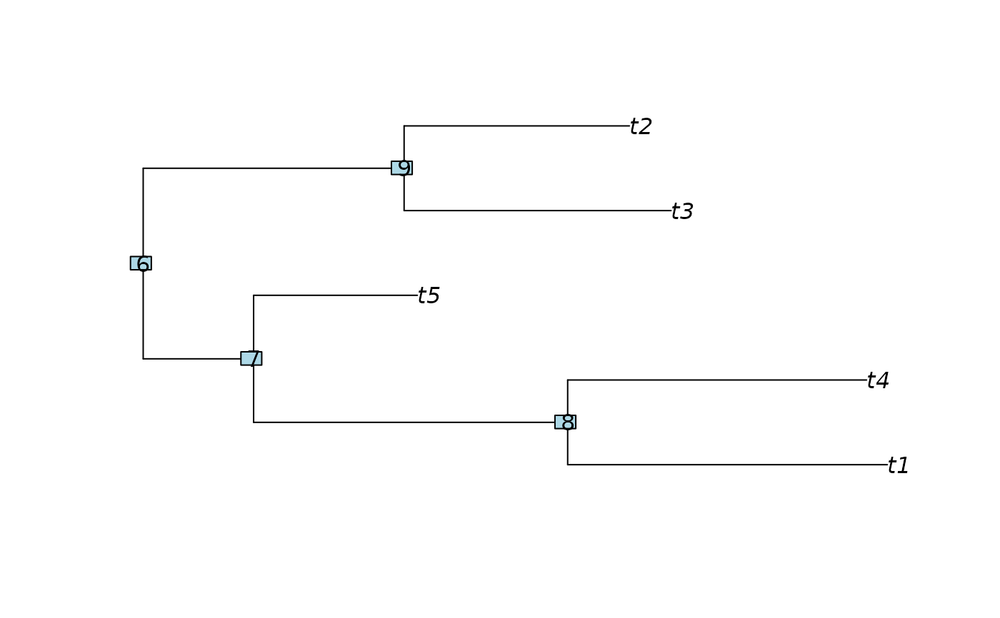

Simulate sequences from a given evolutionary tree.
Usage
simSeq(x, ...)
# S3 method for class 'phylo'
simSeq(x, l = 1000, Q = NULL, bf = NULL,
rootseq = NULL, type = "DNA", model = NULL, levels = NULL,
rate = 1, ancestral = FALSE, code = 1, ...)
# S3 method for class 'pml'
simSeq(x, ancestral = FALSE, ...)Arguments
- x
a phylogenetic tree
tree, i.e. an object of classphyloor and object of classpml.- ...
Further arguments passed to or from other methods.
- l
The length of the sequence to simulate.
- Q
The rate matrix.
- bf
Base frequencies.
- rootseq
A vector of length
lcontaining the root sequence. If not provided, the root sequence is randomly generated.- type
Type of sequences ("DNA", "AA", "CODON" or "USER").
- model
Amino acid model of evolution to employ, for example "WAG", "JTT", "Dayhoff" or "LG". For a full list of supported models, type
phangorn:::.aamodels. Ignored if type is not equal to "AA".- levels
A character vector of the different character tokens. Ignored unless type = "USER".
- rate
A numerical value greater than zero giving the mutation rate or scaler for edge lengths.
- ancestral
Logical specifying whether to return ancestral sequences.
- code
The ncbi genetic code number for translation (see details). By default the standard genetic code is used.
Details
simSeq is a generic function to simulate sequence alignments
along a phylogeny. It is quite flexible and can generate DNA, RNA,
amino acids, codon, morphological or binary sequences.
simSeq can take as input a phylogenetic tree of class phylo,
or a pml object; it will return an object of class phyDat.
There is also a more low level
version, which lacks rate variation, but one can combine different
alignments with their own rates (see example). The rate parameter acts like
a scaler for the edge lengths.
For codon models type="CODON", two additional arguments dnds
for the dN/dS ratio and tstv for the transition transversion ratio
can be supplied.
Defaults:
If x is a tree of class phylo, then sequences will be generated
with the default Jukes-Cantor DNA model ("JC").
If bf is not specified, then all states will be treated as equally
probable.
If Q is not specified, then a uniform rate matrix will be employed.
Author
Klaus Schliep klaus.schliep@gmail.com
Examples
if (FALSE) { # \dontrun{
data(Laurasiatherian)
tree <- nj(dist.ml(Laurasiatherian))
fit <- pml(tree, Laurasiatherian, k=4)
fit <- optim.pml(fit, optNni=TRUE, model="GTR", optGamma=TRUE)
data <- simSeq(fit)
} # }
tree <- rtree(5)
plot(tree)
nodelabels()

# Example for simple DNA alignment
data <- simSeq(tree, l = 10, type="DNA", bf=c(.1,.2,.3,.4), Q=1:6,
ancestral=TRUE)
as.character(data)
#> [,1] [,2] [,3] [,4] [,5] [,6] [,7] [,8] [,9] [,10]
#> t5 "t" "t" "a" "a" "a" "c" "g" "g" "c" "g"
#> t4 "t" "a" "a" "a" "a" "c" "t" "g" "c" "g"
#> t1 "c" "t" "a" "g" "c" "a" "t" "g" "g" "t"
#> t3 "c" "c" "a" "g" "g" "t" "t" "t" "t" "t"
#> t2 "c" "t" "c" "t" "t" "t" "t" "t" "t" "g"
#> 6 "c" "t" "t" "t" "t" "g" "t" "t" "t" "g"
#> 7 "c" "t" "a" "g" "t" "t" "t" "t" "t" "g"
#> 8 "t" "a" "a" "a" "a" "c" "t" "g" "c" "g"
#> 9 "c" "c" "a" "g" "g" "t" "t" "t" "t" "t"
# Example to simulate discrete Gamma rate variation
rates <- discrete.gamma(1,4)
data1 <- simSeq(tree, l = 100, type="AA", model="WAG", rate=rates[1])
data2 <- simSeq(tree, l = 100, type="AA", model="WAG", rate=rates[2])
data3 <- simSeq(tree, l = 100, type="AA", model="WAG", rate=rates[3])
data4 <- simSeq(tree, l = 100, type="AA", model="WAG", rate=rates[4])
data <- c(data1,data2, data3, data4)
write.phyDat(data, file="temp.dat", format="sequential", nbcol = -1,
colsep = "")
unlink("temp.dat")